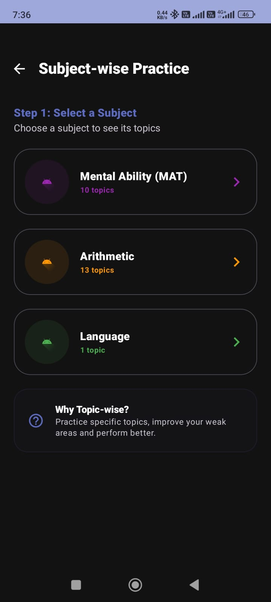
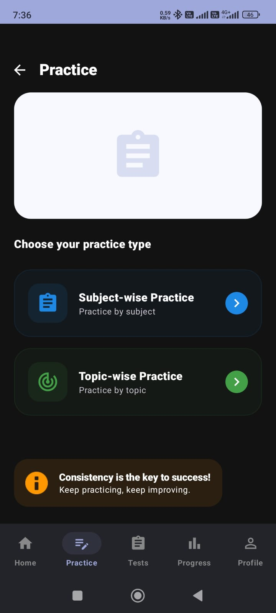
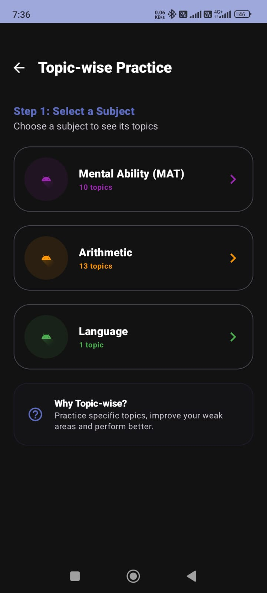

Mental Ability Test (MAT)
Practise reasoning and mental ability questions to develop your problem-solving skills.
Build your preparation step by step with practice for Mental Ability, Arithmetic and Language Passages — in English and Bengali.

Focused practice for key areas of the JNVST Class 6 entrance examination.
Practise reasoning and mental ability questions to develop your problem-solving skills.
Strengthen your maths skills with practice across important arithmetic topics.
Read passages and answer questions to practise reading and understanding.
Choose a subject and focus your practice on one area at a time.
Pick a topic for more focused practice within a subject.
Study and practise in either of the two supported languages.
Use subject-wise or topic-wise practice to work through the areas you want to focus on. These are genuine screens from JNVST GURU.
Get started with the app

JNVST GURU supports English and Bengali, so students can use the language that feels comfortable to them.
JNVST GURU is a free, independent preparation app for students getting ready for the Jawahar Navodaya Vidyalaya Selection Test (JNVST) for admission to Class 6.
It brings together Mental Ability, Arithmetic and language passage practice, with subject-wise and topic-wise ways to practise. Developed by MS Tech Education, JNVST GURU is not affiliated with Navodaya Vidyalaya Samiti or any government organisation.
Download the app from Google Play and practise for JNVST Class 6 in English or Bengali.
A few helpful details about the app and getting started.
JNVST GURU is an independent preparation app for students preparing for the JNVST Class 6 entrance examination. It offers practice in Mental Ability, Arithmetic and language passages.
Yes. JNVST GURU is free to use.
The app supports preparation for the Jawahar Navodaya Vidyalaya Selection Test (JNVST) for admission to Class 6.
You can practise Mental Ability Test (MAT), Arithmetic and Language Passages. Practice can be organised subject-wise or topic-wise.
Yes. Bengali is one of the supported languages in JNVST GURU.
Yes. JNVST GURU is also available in English.
Use the Google Play download button on this page to open the JNVST GURU listing.
Email MS Tech Education at srtech.education@gmail.com.